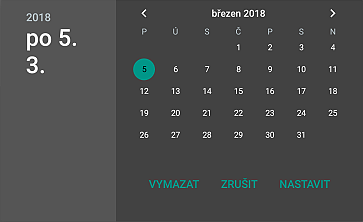
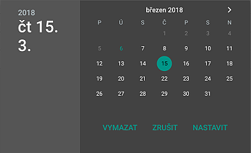
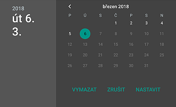

Vkládání a změna datumu
V případě vkládání informací z osobní návštěvy při kliknutí na předepsaný datum či pole, které má obsahovat datum, se objeví standardní dialog pro výběr data.

Tlačítko pro vynulování pole s datumem.
Tlačítko pro opuštění dialogu bez vložení vybraného dialogu.
Tlačítko pro vložení vybraného datumu a opuštění dialogu.
V dialogu jsou označeny následující datumy:

Jiné datumy není možné do systémového dialogového okna vložit.
Některá pole mají omezení datumu (například není možné zadat datum provedené návštěvy dopředu), proto ani v kalendáři není možné takové datum vybrat. Nevybratelná data jsou tmavě šedá a nelze na ně kliknout.
